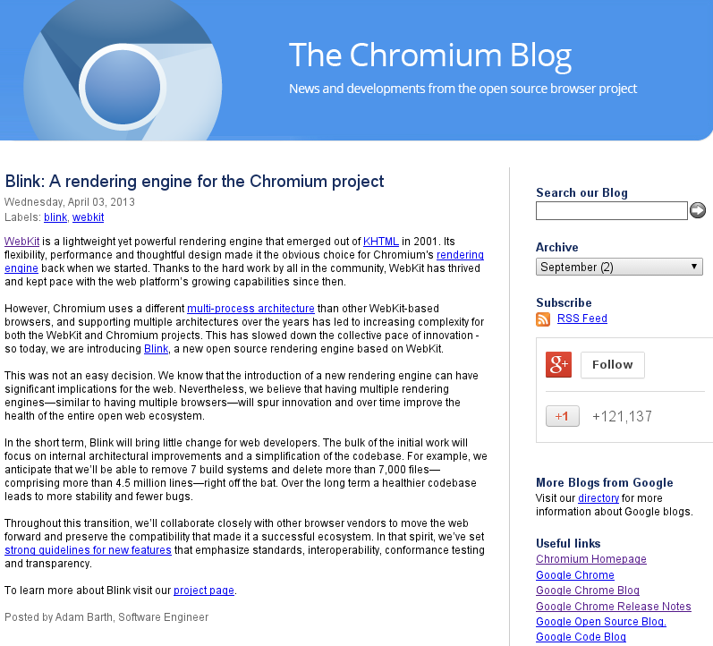

Introducing QtWebEngine
Pierre Rossi
whoami
Pierre Rossi
- Working at Digia, based in Oslo
- Open-source enthusiast
- Loves cooking & climbing
What is this all about ?
- Answer questions
- My agenda
Contents
- A bit of history
- What's the deal with QtWebEngine?
- The road ahead
WebKit
- Introduced QtWebKit with Qt 4.4
- Upstream port
- Great success!
Splitting processes
- Benefits of split process architecture
- Baked right into the framework
- Nokia N9 times
Rough WebKit2 timeline
- April 2010: Apple announces WebKit2
- July 2011: Safari 5.1 ships
- September 2011: N9 ships
- December 2012: Qt 5.0 is out

Impact for us ?
- Biggest contributor departing
- Our cross platform story
- Our developer story?
- Time to reduce sail?
Chromium or Blink?
Building on top of the content API
- Split process
- Up to date web-exposed features
- Cross platform support
...and so should Qt!
Architecture and APIs
Widgets
QT += webenginewidgets
Qt Quick
import QtWebEngine 1.0
- Widgets C++ library
- QtQuick plugin
QtWebEngineWidgets
- QtWebKitWidgets' little sister
- Lighter
- And with some adjustments
QtQuick + WebEngine =
- Building from the ground up
- Scene graph integration
- "Soft" dependency on controls
Roadmap
Technology preview
- end of the year
- Taste of the API
- + + Embedded
First release
- targetting 5.3
- WebKit1-friendly Widgets API
- QtQuick API
- + + + Embedded
Migration plan
- WebKit2 early adopters
- Simple widgets-based app
- More complex hybrid applications
Thank you!
Questions